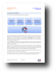

Devenez Sponsor d’Agile France 2012 !
Un rendez-vous incontournable
Avec plus de 300 participants pour sa sixième édition en 2011, la conférence est devenue le rendez-vous de référence pour la communauté Agile. Après le succès des XP Days pendant quatre ans, l’évènement a changé de nom en 2010. La conférence se nomme désormais “Agile France” afin de mieux refléter la diversité des sujets qui y sont abordés, eXtreme Programming, Scrum, Crystal, Lean…
Nous visons plus de 400 participants pour l’édition 2012 !
Du contenu riche
Le succès d’Agile France s’explique par son orientation pragmatique. Lors de ces journées, nous donnons rendez-vous aux acteurs des projets de développement pour venir confronter des idées et découvrir les bénéfices des pratiques Agiles.
Vous pourrez rencontrer:
- des décideurs en quête de nouvelles idées pour améliorer l’efficacité de leurs projets de développement logiciels…
- des professionnels, chercheurs ou universitaires qui souhaitent en savoir plus sur les méthodes Agiles, leurs bénéfices, leurs limites…
- des praticiens qui ont mis en place des pratiques Agiles au sein de leurs projets et souhaitent confronter leurs retours d’expérience à ceux d’autres praticiens…
C’est l’occasion pour tous de découvrir une ambiance particulière, avec une grande coopération, une grande franchise ainsi qu’une véritable envie d’échanger.
Le sponsoring
En apportant votre soutien, vous vous associez ainsi clairement à l’essor des pratiques Agiles en France, et aurez l’occasion de nouer ou renforcer des contacts avec une exceptionnelle communauté de talents ! Cela vous permettra de donner de la visibilité à vos actions, votre entreprise et aussi une image positive pour vos clients.
- Télécharger le document de sponsoring qui spécifie les différentes formules
- Remplissez le document
- Et faites le parvenir à l’équipe
Merci pour votre soutient à la conférence de la communauté agile organisée par des bénévoles.